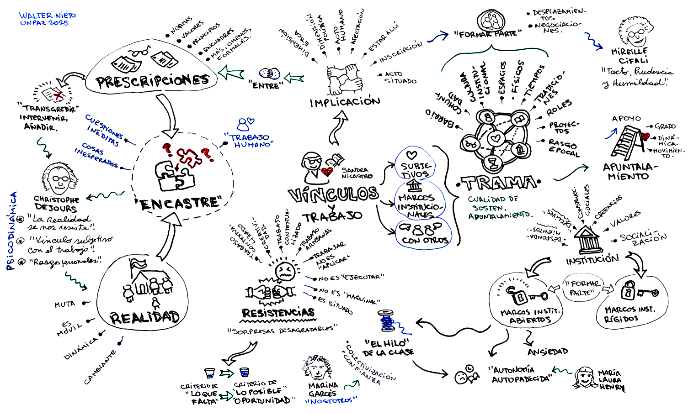

Trabajar en la escuela hoy y los vínculos que apuntalan la posición de los docentes. Sandra Nicastro
 audio
audio  video
video  transcripción
transcripción  resumen
resumen  actividades
actividades

Resumen
En su charla titulada “Trabajar en la escuela hoy y los vínculos que apuntalan la posición de los docentes”, presentada en julio de dos mil veintitrés en Villa María, Córdoba, en el marco del décimo sexto Congreso de Educación del Centro del País, Sandra Nicastro propone una mirada profunda sobre el trabajo docente en el contexto actual, atravesado por tensiones estructurales, transformaciones institucionales y afectaciones subjetivas.
Desde una perspectiva de análisis institucional, plantea que trabajar en la escuela no es una mera ejecución de tareas, sino un acto situado, político y subjetivante. Este trabajo se configura, según Nicastro, en el cruce de tres tipos de vínculos: el vínculo subjetivo con el trabajo, el vínculo con los marcos institucionales, y el vínculo con los otros y las otras que habitan el espacio escolar.
El vínculo subjetivo remite a la relación personal e identitaria que cada docente establece con su práctica. No se trata de una cuestión meramente individual, sino que responde a un rasgo epocal: en un tiempo de instituciones fragmentadas, el trabajador debe “poner el cuerpo”, la cabeza, la voluntad, y muchas veces sostener su tarea con recursos personales. En este sentido, Philippe Davezies y Christophe Dejours —autores que retoma— señalan que el trabajo real no se define por seguir prescripciones, sino por la tensión constante con una realidad cambiante. Esa distancia inevitable entre lo prescripto y lo real no es un error, sino la definición misma del trabajo humano.
El vínculo con los marcos institucionales, por su parte, implica la inscripción del trabajo en regulaciones, normas y valores que apuntalan, condicionan y también otorgan sentido. La docente es trabajadora “entre” marcos, en un juego de desplazamientos y tensiones. En contextos como el de la pandemia, esa distancia entre lo prescripto y lo real puede generar autonomía padecida, como señala María Laura Henry, cuando el exceso de flexibilidad institucional deja al docente desamparado.
El tercer eje es el vínculo con los otros. Nicastro retoma el testimonio de una docente que hablaba del “hilo que conecta” con sus estudiantes, interrumpido durante la virtualidad. Ese hilo metafórico representa la capacidad de articular los marcos institucionales con la singularidad del aula, con las miradas, los cuerpos y los vínculos. La pérdida de ese hilo genera desorientación y cuestionamientos profundos sobre el propio lugar como trabajadora o trabajador de la educación.
A partir de esta imagen, Nicastro introduce una reflexión sobre lo colectivo. La colectivización del trabajo no es simplemente “trabajar en equipo”, sino generar un espacio de pensamiento compartido sobre la intimidad del trabajo. Esa intimidad no se expresa en cualquier condición: requiere un encuadre institucional que habilite el reconocimiento mutuo, la confianza, y la posibilidad de hablar de los aciertos y de los tropiezos —como sugería Hugo Vezzetti, otro autor citado indirectamente.
También cita a la filósofa catalana Marina Garcés, quien advierte que el uso del “nosotras” y “nosotros” muchas veces funciona como refugio identitario más que como práctica transformadora. Para Nicastro, lo colectivo genuino no borra las diferencias, sino que se construye alrededor de ellas, en el intento de configurar lo común.
En el cierre de su intervención, retoma la noción de implicación: estar implicado no es simplemente estar comprometido, sino asumir que se está afectado por lo que se hace. La implicación, dice, es del orden de lo opaco: configura nuestra escucha, nuestra mirada y nuestra manera de intervenir. Trabajar en la escuela, entonces, requiere tacto, prudencia y humildad, como recordaba la psicosocióloga francesa Sifally.
En síntesis, Sandra Nicastro propone leer el trabajo docente como un acto profundamente humano, que se construye en la tensión entre marcos, afectos y relaciones, y que solo puede sostenerse si se reconocen, se revisan y se fortalecen los vínculos que apuntalan la posición de los docentes.
Desarrollo
Sandra Nicastro propone pensar el trabajo en la escuela desde una mirada situada, contextualizada y atravesada por una perspectiva del análisis institucional. Este enfoque entiende que las instituciones son construcciones sociales, históricas y políticas, y que, por lo tanto, el trabajo en la escuela no puede abordarse como una acción individual aislada, sino como una práctica ubicada en un entramado institucional complejo.
Trabajar en la escuela implica un vínculo entre normas, regulaciones, principios y valores del sistema educativo y del Estado. No se trata de una ejecución mecánica de tareas, sino de un hacer en el que se entrelazan marcos normativos con decisiones, saberes, experiencias y situaciones singulares. El trabajo en la escuela no se da en abstracto ni de manera genérica, sino en contextos concretos que involucran tiempos, espacios, configuraciones organizacionales, equipos, condiciones materiales y subjetivas.
La noción de inscripción institucional resulta clave. No se trata solo de estar en una institución, sino de estar inscriptos en ella. Esa inscripción genera marcas, modos de hacer, formas de pensar, y también implica que quienes forman parte de la institución la modifican con su presencia y su accionar. Se establece una relación bidireccional: las personas son moldeadas por la institución y, a la vez, la transforman.
En este marco, el trabajo docente se concibe como una construcción permanente. No es un hacer lineal, ni completamente controlable. Está atravesado por tensiones que no pueden resolverse de manera definitiva. Siempre existe un desfase entre lo que se planifica y lo que ocurre en la práctica. Esa distancia es constitutiva del trabajo y no debe interpretarse como un error o una falla. Más bien, es el lugar donde se juega el sentido del trabajo humano.
Desde la psicodinámica del trabajo, particularmente a partir de los aportes de Christophe Dejours, se sostiene que el trabajo implica una relación entre lo prescripto y lo real. Lo prescripto se expresa en normas, planificaciones, reglamentos y deseos institucionales. Lo real, en cambio, es la situación concreta, lo que efectivamente sucede, que siempre introduce elementos no previstos. Esta diferencia entre lo normado y lo real es ineludible y permanente.
La realidad muchas veces se presenta como resistente. En el contexto escolar, esto puede manifestarse cuando una clase no sale como se esperaba, cuando un grupo se muestra indiferente o cuando una planificación fracasa. Esa resistencia no es simplemente un obstáculo, sino parte inherente del trabajo. Enfrentarla requiere invención, creatividad, adaptación. Trabajar, entonces, es encontrar modos de sostener una práctica frente a esa resistencia.
Desde esta perspectiva, trabajar en la escuela no es aplicar ni ejecutar, sino componer, inventar, crear, resolver situaciones nuevas. Por eso se compara con un oficio artesanal. En ese sentido, cada situación demanda un hacer particular, singular, no replicable. Lo artesanal implica una atención permanente a lo que se hace, a las condiciones del contexto, a los vínculos con otros actores.
La distancia entre lo prescripto y lo real no debe pensarse como un déficit. Cuando desaparece, cuando todo se convierte en una aplicación exacta y sin desvíos, el trabajo se burocratiza, se deshumaniza, se vuelve automático. La existencia de esa distancia habilita la posibilidad de decidir, de elegir, de crear, de reinventar. Es el margen donde se ejerce la autonomía profesional y se sostiene la dimensión ética del trabajo.
El trabajo docente se sostiene en una trama de vínculos. Estos vínculos incluyen las relaciones con uno mismo, con los estudiantes, con otros docentes, con directivos, con las familias, con la comunidad. También con el saber, con el deseo de enseñar, con los marcos institucionales. Esa red no se organiza de manera simple ni jerárquica, sino que se entrelaza de formas complejas. Esos vínculos apuntalan la posición docente: permiten sostenerse en medio de tensiones, incertidumbres, desafíos.
Los componentes que configuran esta trama de sostén no son solo materiales o estructurales. Incluyen también dimensiones simbólicas, afectivas, organizacionales y culturales. El espacio físico, el tiempo institucional, las propuestas pedagógicas, las decisiones colectivas, el lugar de la palabra, la escucha y la mirada entre colegas, forman parte de ese andamiaje invisible que posibilita el trabajo.
Trabajar en la escuela hoy implica habitar instituciones que no son neutrales ni estables. Son escenarios de conflicto, de cambio, de disputa de sentidos. Allí, el docente se posiciona no solo como ejecutor de políticas, sino como sujeto que interpreta, decide, resignifica y produce. El trabajo docente no se agota en una tarea técnica; es, ante todo, una práctica política situada.
Para caracterizar la idea de “trama”, se puede analizar qué significa el vínculo subjetivo con el trabajo, el vínculo con los marcos institucionales y el vínculo con los otros con quienes trabajamos. El autor francés Christophe Dejours sostiene que cada uno establece un vínculo subjetivo con el trabajo, y lo expresa con todas las letras. Esta es una cuestión clave. Muchos investigadores, teniendo en cuenta la época, han mostrado que hoy, en muchos casos, es necesario poner mucho de lo personal en el trabajo profesional. En las organizaciones, nuestro vínculo con el trabajo parece depender cada vez más de nuestras habilidades personales para salir adelante.
Philippe Davezies, en la década de mil novecientos noventa, escribió que si el trabajo implica combinar un rol, un oficio y rasgos personales, hay que pensar en el orden de esa relación. La época nos muestra que las estructuras organizacionales se debilitan, se vuelven frágiles, las instituciones se fragmentan. Surgen numerosos términos para hablar del declive de las instituciones y de las institucionalidades. En ese contexto, los trabajadores buscan saldar esa brecha. Se recurre entonces a “poner el cuerpo”, la cabeza, la voluntad, esforzarse. Todo esto se vincula con lo que Davezies y Dejours llaman “rasgos personales”.
Sin embargo, no se trata de pensar el vínculo subjetivo solo desde los rasgos personales. Estos rasgos emergen hoy porque hay un rasgo epocal que nos atraviesa. Somos sujetos de esta época, y como tales, operamos. El trabajo también nos sostiene identitariamente. Por eso no es sencillo hablar de cambios. Es fácil decir “deberías cambiar esto o aquello”, pero subjetivamente tiene un alto costo.
Al pensar el vínculo subjetivo con el trabajo, aparecen al menos dos cuestiones. Una es la tensión que implica formar parte de instituciones que presentan modelos, estilos, expectativas. Por ejemplo, en una escuela donde se escucha desde la puerta: “Acá para ser maestra hay que hacer tal cosa”, o “una directora acá es así”, o “para trabajar como supervisora…”. Se impone una socialización en determinadas maneras de ser, trabajar y pensar. Para poder entrar en diálogo con esas normas, valores y creencias, el trabajo subjetivo es intenso: hay que renunciar, aceptar, tolerar, enojarse, alegrarse. Además, como en todo proceso de socialización, se necesita tiempo.
Esto no implica que existan escuelas cerradas, donde se es infeliz, y escuelas abiertas, donde se es feliz. No es una división entre lo bueno y lo malo. Se trata de diferentes formas organizacionales, en las que trabajamos, nos socializamos, que nos apuntalan y que nosotros también moldeamos y construimos.
Otra cuestión interesante sobre el vínculo subjetivo con el trabajo es que, según esta perspectiva, trabajar implica añadirle cosas a las prescripciones. Algunos autores sostienen que, a veces, hay que transgredirlas para poder trabajar. La palabra “transgresión” puede incomodar, pero transgredir no significa necesariamente romper. Puede significar añadir, ajustar, intervenir. Porque la realidad es móvil, cambia constantemente. Lo que está escrito en una planificación puede no coincidir con lo que ocurre en el aula. Entonces, intervenir sobre la prescripción no es una mera aplicación mecánica, sino un acto necesario para que el trabajo tenga lugar.
Cada vez que se trabaja, aunque se haya hecho muchas veces antes, es diferente. La realidad siempre aparece con una sorpresa desagradable. A veces es mínima, casi como un grillo que cruje, pero se siente. Y en ese momento, el trabajo está ocurriendo: en el aula, con un grupo, con los pares, en un proyecto, con la directora, con las familias. La realidad se resiste, y ahí se evidencia que el trabajo docente no puede ser mera ejecución o simple aplicación.
Cuando un trabajo se vuelve maquinal, pierde su dimensión de vínculo con lo real. En contextos alterados, como los de la pandemia o la pospandemia, surge la necesidad de saber hacia dónde ir, de buscar una respuesta. Ensayar, probar, buscar un atajo: eso no es un “mientras tanto”. Eso es trabajar. En un marco de prescripciones universales pensadas para todo el sistema educativo, para una ciudad, para una escuela, cada docente trabaja sobre lo particular: la situación de su escuela, la relación pedagógica, el grupo con el que está.
Surge entonces una segunda hipótesis: pensar los vínculos en relación con los marcos institucionales. Existen escuelas más abiertas o más formalizadas. En todos los casos, los trabajadores entran en una relación de dependencia con esos marcos, en el sentido de que los necesitan como sostén, como modelo de pasaje.
La socióloga argentina María Laura Henry, desde la línea de la psicodinámica del trabajo, formuló algunas hipótesis interesantes durante la pandemia. Señaló que, si bien trabajar siempre implica una tensión entre lo prescripto y la realidad, y aunque esa distancia puede generar autonomía, también puede producir una “autonomía padecida”. Es una idea útil para pensar que, en algunos contextos, la brecha entre prescripción y realidad puede resultar productiva, pero en otros, puede generar angustia.
Durante la pandemia, por ejemplo, los protocolos prescribían generalidades, pero los docentes necesitaban saber cómo ajustar eso a su realidad concreta. En ese sentido, la brecha debía reducirse. A veces, se transforma en un espacio de libertad y ensayo. Otras veces, en un motivo de sobrecarga y desamparo. No se trata de culpar al trabajador que “no hace bien su trabajo”, sino de entender cómo esa relación con los marcos condiciona lo que puede hacerse. Porque si los marcos no apuntalan, no pueden ser de cualquier tipo.
Sandra Nicastro retoma una potente metáfora que surge de una entrevista realizada a una docente: la idea del “hilo que conecta”. Según esta colega, el docente lleva en la cabeza un hilo, que es a la vez su planificación, su clase pensada, sus marcos curriculares, sus ideas. Ese hilo se proyecta hacia los estudiantes en el acto mismo de enseñar. Durante la pandemia, decía esta docente, no podía conectar ese hilo a través del Zoom. No se trataba solo de una imposibilidad técnica, sino de una desconexión profunda con el sentido mismo de su práctica. Cuando regresó la presencialidad, volvió a conectar el hilo y con ello pudo volver a reconocerse en su trabajo.
Nicastro valora especialmente esta metáfora porque permite entender cómo ese hilo no solo es la clase en sí misma, sino que forma parte de una trama compleja: une marcos institucionales, diseños curriculares, historia personal como docente, decisiones situadas, vínculos, expectativas, tareas. Es, en definitiva, un entramado que da sentido y dirección al trabajo educativo. Y cuando ese hilo se corta, como ocurrió en muchos casos durante la pandemia, no solo se rompe la clase, también se diluye el lugar desde el cual se puede decir con claridad “de qué trabajo”.
A partir de esta metáfora del hilo, Nicastro introduce su tercera gran hipótesis: el trabajo docente se sostiene en el vínculo con otros. No se trata solo del espacio, del tiempo o de los recursos disponibles, sino de una trama de relaciones que apuntalan ese hacer. Pero esta trama, en el contexto actual, aparece fragilizada. Las referencias simbólicas y organizacionales que sostenían el trabajo se movieron, se trastocaron. Y eso hace que muchas veces, dentro de las instituciones, se perciba una sensación de caída, de desfondamiento.
Ante esto, la autora propone pensar en la colaboración y la colectivización como configuraciones posibles del trabajo docente, pero aclara: no se trata simplemente de “trabajar en equipo”. Lo colectivo, para que sea significativo, tiene que constituirse como un espacio donde se pueda hablar de la intimidad del trabajo. No de lo íntimo como vida personal, sino de lo íntimo del hacer profesional: lo que sale y lo que no sale, lo que nos gusta y lo que nos cuesta, los tropiezos que solo puede entender alguien que hace lo mismo que uno. Esa intimidad compartida requiere condiciones institucionales que la habiliten, que no se den por supuestas. Por eso no alcanza con decir “trabajemos juntos”. Se necesita un marco que sostenga la posibilidad real de construir colaboración, escucha y confianza.
Nicastro recuerda una idea del psicoanalista Christophe Dejours, quien relataba cómo dos obreros en una obra podían valorar como “hermoso” un cimiento, algo que desde afuera parecía trivial. Esa experiencia compartida de sentido en el hacer es también lo que permite que entre docentes puedan decir “qué hermoso proyecto”, más allá de lo que pueda ver cualquier otro. Lo mismo ocurre en la escuela. Lo colectivo no es la suma de individualidades, sino una construcción donde las diferencias no se borran, sino que se ponen en juego para dar lugar a lo común.
La autora también advierte que muchas veces el uso de expresiones como “nosotras” o “nosotros” no significa necesariamente que se esté pensando en clave de colectivización. A veces funcionan más como refugios identitarios, donde se intenta negar o suavizar la conflictividad propia de todo colectivo. Y sin embargo, esa conflictividad es parte constitutiva de lo común: donde no llega mi mano, llega la de otro; lo que no veo, otro lo ve; lo que no entiendo, otro lo interpreta. Pero para que eso funcione, hace falta confianza. Y esa confianza tampoco es mágica: hay que construirla institucionalmente.
Finalmente, Nicastro vuelve sobre el núcleo de su reflexión: el trabajo docente no puede pensarse fuera del vínculo. No es solo lo que hacemos, sino el modo en que nos implicamos con lo que hacemos. El trabajo en la escuela ocurre dentro de un sistema educativo, en el marco de una política pública, en una institución concreta, y requiere preguntarnos qué significa para cada uno estar allí. Qué significa trabajar en ese lugar, con esas personas, bajo esas condiciones. Esa búsqueda de sentido está atravesada por afectos, por implicaciones que no son un simple compromiso externo, sino una verdadera afección. Algo que nos importa profundamente y que, a pesar del malestar, no estamos dispuestos a abandonar. Por eso, la implicación no es una fórmula vacía: es una dimensión opaca, compleja, que atraviesa nuestra tarea. Y solo si nos animamos a pensarla, a compartirla, a hacerla objeto de reflexión colectiva, podremos sostener el trabajo con otros y encontrar nuevas formas de conexión en un mundo que cambia.